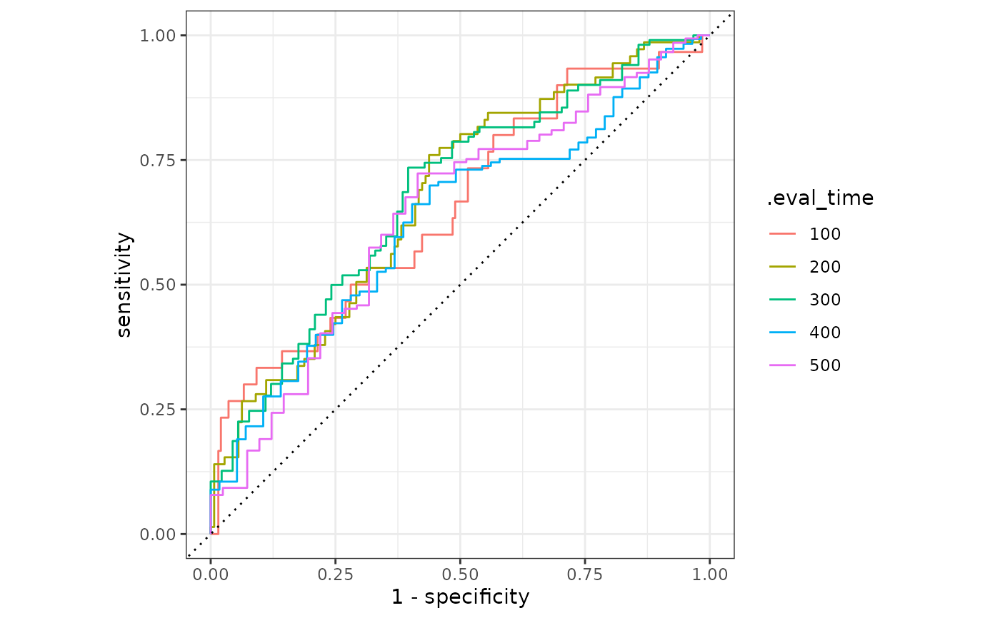

Time-Dependent ROC surve for Censored Data
Source:R/surv-roc_curve_survival.R
roc_curve_survival.RdCompute the ROC survival curve using predicted survival probabilities that corresponds to different time points.
Usage
roc_curve_survival(data, ...)
# S3 method for class 'data.frame'
roc_curve_survival(data, truth, ..., na_rm = TRUE, case_weights = NULL)Arguments
- data
A
data.framecontaining the columns specified bytruthand....- ...
The column identifier for the survival probabilities this should be a list column of data.frames corresponding to the output given when predicting with censored model. This should be an unquoted column name although this argument is passed by expression and supports quasiquotation (you can unquote column names). For
_vec()functions, the dots are not used.- truth
The column identifier for the true survival result (that is created using
survival::Surv().). This should be an unquoted column name although this argument is passed by expression and supports quasiquotation (you can unquote column names). For_vec()functions, ansurvival::Surv()object.- na_rm
A
logicalvalue indicating whetherNAvalues should be stripped before the computation proceeds.- case_weights
The optional column identifier for case weights. This should be an unquoted column name that evaluates to a numeric column in
data. For_vec()functions, a numeric vector,hardhat::importance_weights(), orhardhat::frequency_weights().
Value
A tibble with class roc_survival_df, grouped_roc_survival_df having
columns .threshold, sensitivity, specificity, and .eval_time.
Details
This formulation takes survival probability predictions at one or more specific evaluation times and, for each time, computes the ROC curve. To account for censoring, inverse probability of censoring weights (IPCW) are used in the calculations. See equation 7 of section 4.3 in Blanche at al (2013) for the details.
The column passed to ... should be a list column with one element per
independent experiential unit (e.g. patient). The list column should contain
data frames with several columns:
.eval_time: The time that the prediction is made..pred_survival: The predicted probability of survival up to.eval_time.weight_censored: The case weight for the inverse probability of censoring.
The last column can be produced using parsnip::.censoring_weights_graf().
This corresponds to the weighting scheme of Graf et al (1999). The
internal data set lung_surv shows an example of the format.
This method automatically groups by the .eval_time argument.
References
Blanche, P., Dartigues, J.-F. and Jacqmin-Gadda, H. (2013), Review and comparison of ROC curve estimators for a time-dependent outcome with marker-dependent censoring. Biom. J., 55: 687-704.
Graf, E., Schmoor, C., Sauerbrei, W. and Schumacher, M. (1999), Assessment and comparison of prognostic classification schemes for survival data. Statist. Med., 18: 2529-2545.
See also
Compute the area under the ROC survival curve with roc_auc_survival().
Examples
result <- roc_curve_survival(
lung_surv,
truth = surv_obj,
.pred
)
result
#> # A tibble: 650 × 4
#> .threshold specificity sensitivity .eval_time
#> <dbl> <dbl> <dbl> <dbl>
#> 1 Inf 1 0 100
#> 2 0.948 0.995 0 100
#> 3 0.947 0.985 0.0333 100
#> 4 0.946 0.985 0.133 100
#> 5 0.945 0.985 0.167 100
#> 6 0.945 0.980 0.233 100
#> 7 0.944 0.969 0.233 100
#> 8 0.944 0.964 0.267 100
#> 9 0.942 0.959 0.267 100
#> 10 0.941 0.954 0.267 100
#> # ℹ 640 more rows
# ---------------------------------------------------------------------------
# `autoplot()`
# Visualize the curve using ggplot2 manually
library(ggplot2)
library(dplyr)
result |>
mutate(.eval_time = format(.eval_time)) |>
ggplot(aes(
x = 1 - specificity, y = sensitivity,
group = .eval_time, col = .eval_time
)) +
geom_step(direction = "hv") +
geom_abline(lty = 3) +
coord_equal() +
theme_bw()

# Or use autoplot
autoplot(result)